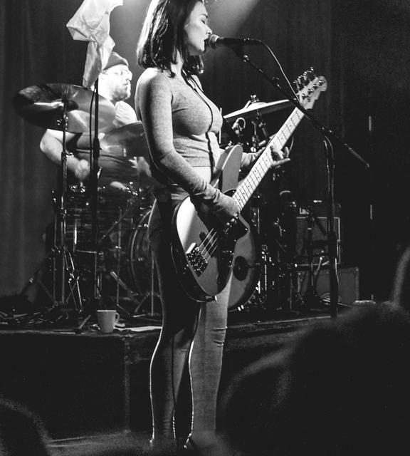

CSU East Bay · Music Department
MUS 302 · What to Listen for in Music
Module 4: Asian American Traditions · Listening Guide · Track 5 of 5
Track 5 Mitski, "Your Best American Girl" (2016)

Context
Mitski Miyawaki's path to Puberty 2
Miyawaki was born Mitsuki Laycock in Mie Prefecture, Japan, on September 27, 1990, to an American father and a Japanese mother. Her father worked for the United States Department of State, and the family moved frequently across her childhood: she has named Japan, the Czech Republic, Malaysia, China, Turkey, the Democratic Republic of the Congo, and several US locations among the places she lived before finishing high school in Ankara. She has described herself in interviews as "half Japanese, half American but not fully either," and has expressed ambivalence about labels like "Japanese American" and "Asian American" for a person whose specific upbringing did not pass through the diasporic communities those labels typically describe.
She wrote her first song at eighteen, on a piano in Turkey. She enrolled at Hunter College in New York to study film, transferred to the SUNY Purchase Conservatory of Music to study studio composition, and graduated in 2013. While at Purchase she self-released two albums as student projects: Lush (2012) and Retired from Sad, New Career in Business (2013), the latter a collaboration with the Purchase student orchestra. Her third album, Bury Me at Makeout Creek (named after a Simpsons quote), came out in 2014 on the small independent label Double Double Whammy and earned a review (7.7) that called it "a complex 10-song story" containing "some of the most nuanced, complex and articulate music that's come from the indiesphere in a while." That review, more than anything else, brought her work to the attention of , the Bloomington, Indiana indie rock label that signed her in late 2015.
Puberty 2, her fourth album and Dead Oceans debut, was recorded over two weeks at Acme Studios in Westchester County, New York, in collaboration with the producer ; Mitski has said in interviews that she and Hyland played "every instrument" on the record between the two of them. The lead single, "Your Best American Girl," was released on March 1, 2016. The music video, directed by , premiered on April 13, 2016. The full album followed on June 17, 2016, and was widely received as a critical breakthrough: a Metacritic aggregate score of 87 out of 100, year-end best-of placements (number 3 on Time Magazine's albums of 2016, among others), and the recognition that the lead single, in Marie Claire's 2026 retrospective phrasing, "sparked an indie-rock paradigm shift."
Indie rock as an institutional space, c. 2016
is both a genre and an institutional space, and the two senses are entangled. As a genre, indie rock is a loose late-twentieth- and early-twenty-first-century descendant of the 1980s American college-rock and post-punk scenes (R.E.M., the Replacements, Sonic Youth, Pixies, Pavement) that inherited those scenes' guitar-based instrumentation, rough recording aesthetic, and ambivalence about commercial success. As an institutional space, indie rock is the cluster of independent record labels (Sub Pop, Matador, Merge, 4AD, Touch and Go, and in the 2010s Dead Oceans / Jagjaguwar / Secretly Canadian under the Secretly Group umbrella), independent-music magazines and websites (early Pitchfork, the more recent Stereogum and Brooklyn Vegan), college and community radio stations, and small-to-mid-sized rock venues that, taken together, constitute a parallel music industry alongside the major-label pop industry. The genre has a recognizable sound; the institutional space has a recognizable demographic profile.
That demographic profile is part of the analytical context for "Your Best American Girl." Through its first three decades the indie rock space was overwhelmingly white, overwhelmingly male, and overwhelmingly focused on the work of white male songwriters. Women had foundational roles (Kim Gordon, Kim Deal, Kathleen Hanna, Liz Phair, PJ Harvey, Cat Power), but their presence was treated as a notable feature inside a default-male landscape rather than as the landscape itself. Asian American figures had been working in indie rock for decades before Mitski's 2016 breakthrough (the critic James Gui's 2022 Bandcamp piece on Sooyoung Park and the early-internet-era scene names Park, James Iha of the Smashing Pumpkins, David Pajo of Slint, Cibo Matto's Miho Hatori, and others), but those figures had circulated, in Gui's phrasing, as "bullet points, rarely connecting to constitute a scene or narrative." The closest pre-Mitski precedent for an Asian American woman fronting an indie rock band on the indie rock press's central terms was Karen O of Yeah Yeah Yeahs, born in Busan to a Korean mother and a Polish American father, whose band's debut Fever to Tell arrived in 2003. This is the institutional space "Your Best American Girl" entered as the lead single from a record on a Secretly Group label, reviewed by Pitchfork, sold through indie record stores, and toured through indie rock venues. The song's reception, and Mitski's career trajectory after it, is one of the data points scholars and critics use when arguing that the late 2010s saw a substantial rebalancing of who got to be at the center of the indie rock picture.
The single, the music video, and the song's reception
"Your Best American Girl" was released as a digital single and a Dead Oceans SoundCloud stream on March 1, 2016. The music video premiered on YouTube on April 13. Reception was immediate and intense. Pitchfork, in its album review of Puberty 2, described the song as growing "from an acoustic strum with some twinkling dream pop synths, to sharp bursts of feedback that would fit right in on Weezer's Pinkerton." Rolling Stone later named "Your Best American Girl" the thirteenth-best song of the 2010s. The song became, by general consensus, Mitski's most widely-known recording, and the entry point most non-Mitski-fans use when first encountering her work.
Critical reception split, productively, between two readings. The first read the song as an Asian American statement, a young Japanese American songwriter's pushback against the white indie rock landscape she was entering. Mitski herself supplied much of the language for that reading in the song's initial press: in a March 2016 announcement she said, "I wanted to use those white-American-guy stereotypes as a Japanese girl who can't fit in, who can never be an 'American girl.'" The second reading, which Mitski emphasized in subsequent interviews, treated the song as a love song first and a political statement second, or not at all. In a Facebook post pushing back on the first reading, she wrote: "I wasn't trying to send a message. I was in love. I loved somebody so much, but I also realized I can never be what would fit into their life." In the NPR interview that followed the album release, she put it this way: "It's just a feeling of loving someone so much, and yet being from completely different backgrounds and not being able to do anything about it." Both readings are available in the song; one of the ways "Your Best American Girl" works as a recording is that it does not require the listener to choose between them.
The Zia Anger-directed music video extends and complicates both readings simultaneously. The video opens on Mitski being made up on a stool in a dark studio, dressed in a magenta pantsuit. A conventionally attractive white man enters on a parallel stool; he and Mitski exchange flirtatious looks and waves. A blonde white woman in flower crown and crop top (the cinematographer Ashley Connor and the director have both said the woman's costume is a deliberate "Coachella" caricature) joins the man, and the two begin furiously making out. Mitski watches, then begins kissing her own hand in mirrored response. As the chorus distortion enters, she picks up an and shreds; at the end, smiling, she walks off the set. The cinematographer has named the video's visual reference: "old PJ Harvey videos, the sort of woman with guitar and nothing else in a white space."
Things to listen for
"Your Best American Girl" runs three minutes and thirty-two seconds. The is 4/4 throughout, the sits at roughly 77 , on the slower end of mid-tempo rock, and the song is in the of D major. The is verse-chorus, with a structure that runs intro, verse, verse, , chorus, verse, pre-chorus, chorus, outro. The instrumentation builds across the song: a lone strummed acoustic guitar at the opening, vocals entering soon after, dream-pop swells under the second verse, and at the chorus a wall of distorted electric guitars, full drum kit, and bass. The vocal stays Mitski's throughout. Listen, on first pass, for the song's central dramatic move: the contrast between the quiet, almost hesitant opening verses and the explosive distorted chorus. Then listen, on second pass, for the four prompts below.
First, the timbre, with attention to the transformation across the song. The opening forty-five seconds are an acoustic-guitar-and-voice timbre: Mitski strums an acoustic guitar and sings in a soft, conversational range, with the vocal close-miked and the guitar nearly dry, the two of them carrying the song almost alone. Compare this opening timbre to the timbre of the choruses, which arrive at roughly 1:08. At the chorus, a bank of distorted electric guitars, full drum kit, and electric bass enter together; the goes from one instrument and one voice to a dense rock-band wall. The vocal becomes more strained and louder as the texture thickens. The song's timbral argument is that the same singer, telling the same story, can occupy two opposite timbral spaces inside three minutes: the soft acoustic intimacy that indie folk and singer-songwriter recordings have used for half a century, and the distorted electric power that 1990s alternative rock used for its emotional climaxes. The song moves between them deliberately, and the move is the song's central musical event. Listen for what the contrast does to the words: the same lyrics ("your mother wouldn't approve of how my mother raised me") read differently when sung against an acoustic strum than when shouted over distortion.
Second, the and the build. The song is structured as a long crescendo, in a way that the track-by-track recordings in earlier parts of this module mostly are not. The dynamic range from the opening verse (very quiet, just acoustic guitar and a close-mic'd vocal) to the second chorus (very loud, full band with distorted guitars and a near-shouted vocal) is unusually wide for a three-and-a-half-minute pop song; the song uses the full dynamic range that rock recordings can use, and uses it for structural rather than ornamental ends. The pre-chorus is the bridge between the two zones. The synthesizer pads enter under the second verse and grow gradually; the drums enter at the first pre-chorus and stay; the distorted guitars hit on the of the first chorus and transform the song. Listen, in particular, for what the second verse does: it is louder than the first verse but quieter than the first chorus, and the song uses that middle dynamic to set up the contrast that is about to arrive. This kind of dynamic structure (the slow-build-to-a-distorted-chorus) is a recognizable nineteen-nineties alternative-rock convention; Pitchfork specifically named Weezer's Pinkerton, and other reviewers have named the Pixies' loud-quiet-loud structure (which Kurt Cobain himself named as the model for Nirvana's "Smells Like Teen Spirit"). The song's relationship to that nineties convention is part of how the song speaks to indie rock's institutional history.
Third, the form, and the way the verse-chorus structure carries the song's emotional argument. "Your Best American Girl" is in form, the standard pop-song architecture this course has been tracking since Module 1. The form here, however, is doing specific work. The verses are first-person, intimate, addressed to a particular "you": "if I could, I'd be your little spoon and kiss your fingers forevermore, but big spoon, you have so much to do, and I have nothing ahead of me." The chorus pulls back to a more distanced, almost universal claim: "your mother wouldn't approve of how my mother raised me, but I do, I think I do, and you're an all-American boy, I guess I couldn't help trying to be your best American girl." The verses describe a private feeling; the chorus names what the private feeling is about. The form's argument is that the personal and the political are not separate registers in the song: the same speaker in the same song moves between intimate self-address and the recognition that her intimate experience is shaped by a cultural and racial difference she cannot reason her way out of. The pre-chorus ("you're the sun, you've never seen the night, but you hear its song from the morning birds, well, I'm not the moon, I'm not even a star, but awake at night I'll be singing to the birds") is the song's most lyrically dense passage and the place the metaphor work happens. The verse-chorus structure is what allows that metaphor work to land where it does.
Fourth, the gesture, which is the question of how to read the song's relationship to its listener. The framing reading for this module argued that one mode of political work in Asian American music is what it called presence: the political achievement of a song is sometimes simply that the song exists in the cultural place it does, and is heard there as belonging there. "Your Best American Girl" is the module's clearest case of presence as political work. The song was the lead single from a Pitchfork-reviewed album on a Secretly Group label, sold through indie record stores, played on indie rock radio, and toured through indie rock clubs. Mitski became, partly on the strength of this single, one of the most recognized Asian American musicians working in indie rock. The song's presence is political because of what made it conspicuous: the indie rock space had been built across three decades around a different demographic profile, and a Japanese American woman fronting an indie rock single that became the centerpiece of an indie-rock-of-the-decade conversation registered as a real change in who got to be at the center of the picture. At the same time, Mitski has been clear in interviews that she did not write the song to make a political statement ("I wasn't trying to send a message. I was in love"), and the song's first-person love-song reading is genuinely available in the lyrics, the music, and her account of the writing. Both readings are there, and the song does not require the listener to pick. Listen for what changes when you take the song as a love song first, and what changes when you take it as a song about being Asian American in the indie rock space. The reflective question is what to do with both readings at once.
"Your Best American Girl" works on at least two registers simultaneously: a first-person love song about being unable to fit into the life of a particular person from a particular background, and a song about being Asian American inside the indie rock space. Mitski has resisted having the second reading made the only or the main reading of the song; reviewers and listeners have repeatedly pulled the song toward the second reading anyway. Pick one moment in the recording (a specific verse line, a specific transition, a specific instrumental gesture) where the two readings co-exist most clearly, and describe what each reading hears in that moment. The framing reading argued that presence as political work is sometimes the quietest mode, because it operates at the level of who appears in the cultural picture rather than at the level of what any particular song says. If that is right, what is the relationship between Mitski's stated intention and the song's political effect? Can a song mean something its writer did not intend, and if so, who decides what it means?
Sources for this section
Hilton, Robin. "Mitski Talks 'Your Best American Girl,' Identity And Her New Album." NPR All Songs Considered, March 2, 2016. The interview Mitski gave on the song's initial release. Source for her account of the song's origin ("from wanting to just fit into this very American person's life and simply not being able to") and for her framing of the song as autobiographical rather than fictional.
Berman, Stuart. "Mitski: Puberty 2." Pitchfork, June 19, 2016. The album review on release. Source for the description of "Your Best American Girl" as growing "from an acoustic strum with some twinkling dream pop synths, to sharp bursts of feedback" and for the comparison to Weezer's Pinkerton.
Norris, Jenna. "10 Years Ago, Mitski's 'Your Best American Girl' Sparked an Indie-Rock Paradigm Shift." Marie Claire, April 2026. Long-form 10-year retrospective interview with the music-video director Zia Anger. Source for the production history of the music video (Brooklyn warehouse, February 2016 shoot, "shred" as the answer to "what's the most don't-give-a-fuck thing she could do right now?") and for the cultural-impact framing this guide draws on.
"Your Best American Girl." Wikipedia. Source for the song's release dates, instrumentation description (acoustic guitar strumming, dream-pop synthesizers, distorted electric guitars), Acme Studios recording location, and the Rolling Stone "13th best song of the 2010s" placement.
"Puberty 2." Wikipedia. Source for the album-level chronology, the recording with Patrick Hyland over two weeks at Acme, the Metacritic 87 aggregate, and the music-video premiere date (April 13, 2016).
"Mitski." Wikipedia. Source for the biographical chronology: birth in Mie Prefecture, the parents (American father, Japanese mother), the State Department-driven moves, the SUNY Purchase studio composition degree, the early self-released albums, and the 2015 Dead Oceans signing.
Day, Laurence. "Mitski announces new LP Puberty 2, shares 'Your Best American Girl.'" The Line of Best Fit, March 1, 2016. The single's announcement piece. Source for Mitski's initial framing of the song: "I wanted to use those white-American-guy stereotypes as a Japanese girl who can't fit in, who can never be an 'American girl.'"
Powell, Mike. "Mitski's 'Your Best American Girl': Songs That Defined the Decade." Billboard, October 2019. Source for the Ashley Connor quote about the music video's PJ Harvey reference ("the sort of woman with guitar and nothing else in a white space") and for Zia Anger's "shred" quote.
Gui, James. "Finding Sooyoung Park and the Asian Americans in Indie Rock's Pre-Internet Heyday." Bandcamp Daily, November 9, 2022. Long-form scholarship on the pre-Mitski generation of Asian American indie rock musicians (Sooyoung Park of Seam, James Iha of the Smashing Pumpkins, David Pajo of Slint, Cibo Matto's Miho Hatori, Korea Girl, Ee). Source for the "bullet points, rarely connecting to constitute a scene or narrative" quote and for the Karen-O-to-Mitski-to-Zauner lineage framing.
Hooktheory, "Your Best American Girl" by Mitski, theorytab analysis; songbpm.com and gemtracks.com, "Your Best American Girl" by Mitski. Sources for the key (D major, per Hooktheory's human transcription), the tempo (77 BPM), the meter (4/4), and the runtime (3:32).